The following modules installed.
- import illustris_python as il
- import numpy as np
- import pandas as pd
- import os
- import matplotlib.pyplot as plt
- from matplotlib.colors import LogNorm
- import glob
The physical quantities incorporated are as follows.
CMx
CMy
CMz
x
y
z
Density
ElectronAbundance
EnergyDissipation
GFM_AGNRadiation
GFM_CoolingRate
GFM_Metallicity
H
He
C
N
O
Ne
Mg
Si
Fe
MetalTotal
SNIa
SNII
AGB
NSNS
FeSNIa
FeSNII
GFM_WindDMVelDisp
GFM_WindHostHaloMass
InternalEnergy
InternalEnergyOld
Machnumber
magx
magy
magz
MagneticFieldDivergence
Masses
NeutralHydrogenAbundance
Potential
StarFormationRate
vx
vy
vz
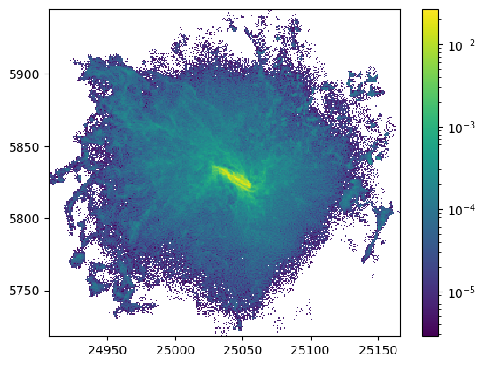
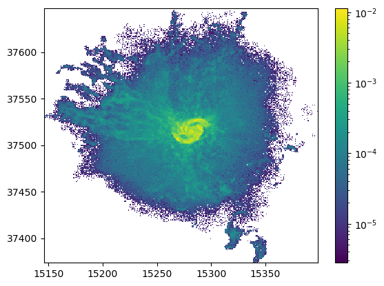
bins = 301
xbins = np.linspace(15260, 15300, bins)
ybins = np.linspace(37500, 37540, bins)
hist, xed, yed = np.histogram2d(x, y, bins=(xbins, ybins), weights=m)
plt.pcolormesh(xed,yed, hist.T)
plt.colorbar()
plt.show()
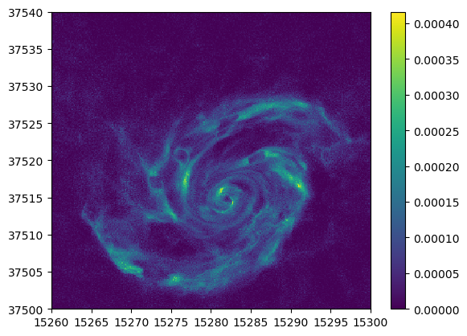
質量
n = 10000
_num = np.argsort(r)
r = r[_num]
m = m[_num]
avg_r = [r[i] for i in range(len(r)) if i%n==0]
avg_m = np.convolve(m,np.ones(n)/n, mode='valid')
print(r[n:].shape, avg_m[1:].shape)
(967796,) (967796,)
# plt.plot(avg_r,avg_m,c="blue",lw=1,label="Moving Average Line")
plt.plot(r[n:],avg_m[1:],c="red",lw=1,label="Moving Average Line")
# plt.scatter(r,m,s=0.1,c="gray",alpha=0.5,label="Data")
plt.legend()
# plt.ylim(0.5e-5,1e-5)
plt.show()
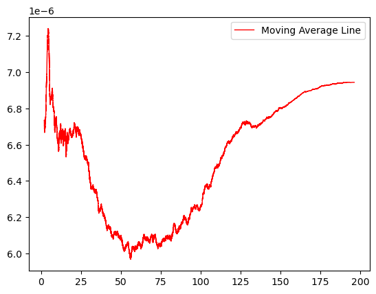
速度
x1 = x[(15300>x) & (x>15260) & (y>37500) & (y<37540)]
y1 = y[(15300>x) & (x>15260) & (y>37500) & (y<37540)]
z1 = z[(15300>x) & (x>15260) & (y>37500) & (y<37540)]
vx1 = vx[(15300>x) & (x>15260) & (y>37500) & (y<37540)]
vy1 = vy[(15300>x) & (x>15260) & (y>37500) & (y<37540)]
vz1 = vz[(15300>x) & (x>15260) & (y>37500) & (y<37540)]
bins = 301
xbins = np.linspace(15260, 15300, bins)
ybins = np.linspace(37500, 37540, bins)
vxhist, xed, yed = np.histogram2d(x1, y1, bins=(xbins, ybins), weights=vx1)
vyhist, xed, yed = np.histogram2d(x1, y1, bins=(xbins, ybins), weights=vy1)
np.shape(vxhist),np.shape(vyhist)
((300, 300), (300, 300))
((301,), (301,))
((300, 300), (300, 300))
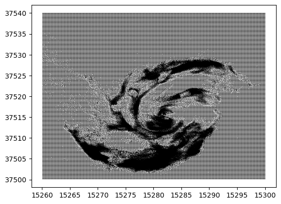
bins = 301
xbins = np.linspace(15260, 15300, bins)
ybins = np.linspace(37500, 37540, bins)
hist, xed, yed = np.histogram2d(x, y, bins=(xbins, ybins), weights=np.sqrt(vx**2+vy**2+vz**2))
_hist, xed, yed = np.histogram2d(x, y, bins=(xbins, ybins))
# print(hist/_hist)
plt.pcolormesh(xed,yed, np.nan_to_num(hist/_hist).T)
plt.colorbar()
plt.show()
/tmp/ipykernel_396230/3676064068.py:7: RuntimeWarning: invalid value encountered in divide
plt.pcolormesh(xed,yed, np.nan_to_num(hist/_hist).T)
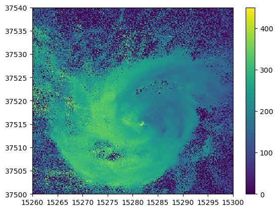
金属
bins = 301
xbins = np.linspace(15260, 15300, bins)
ybins = np.linspace(37500, 37540, bins)
hist, xed, yed = np.histogram2d(x, y, bins=(xbins, ybins), weights=m*o)
# plt.pcolormesh(xed,yed, hist.T,norm=LogNorm(vmin=hist[hist>0].min(), vmax=hist.max()))
_hist, xed, yed = np.histogram2d(x, y, bins=(xbins, ybins))
a = hist/_hist
np.nan_to_num(a,0)
# plt.pcolormesh(xed,yed,a.T)
plt.pcolormesh(xed,yed, hist.T)
plt.colorbar()
plt.show()
/tmp/ipykernel_396230/879197844.py:7: RuntimeWarning: invalid value encountered in divide
a = hist/_hist
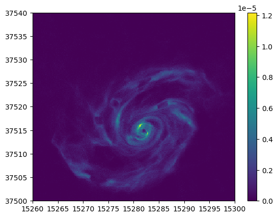
0.039025858
x, y, z, Ne= test.output("Ne")
bins = 301
xbins = np.linspace(15260, 15300, bins)
ybins = np.linspace(37500, 37540, bins)
hist, xed, yed = np.histogram2d(x, y, bins=(xbins, ybins), weights=Ne)
_hist, xed, yed = np.histogram2d(x, y, bins=(xbins, ybins))
# plt.pcolormesh(xed,yed, hist.T,norm=LogNorm(vmin=hist[hist>0].min(), vmax=hist.max()))
a = hist/_hist
np.nan_to_num(a,0)
# plt.pcolormesh(xed,yed,a.T)
plt.pcolormesh(xed,yed,hist.T)
plt.colorbar()
plt.show()
/tmp/ipykernel_396230/4189587708.py:8: RuntimeWarning: invalid value encountered in divide
a = hist/_hist
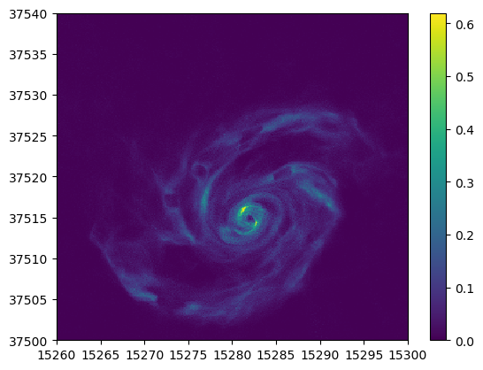
bins = 301
xbins = np.linspace(15260, 15300, bins)
ybins = np.linspace(37500, 37540, bins)
hist, xed, yed = np.histogram2d(x, y, bins=(xbins, ybins), weights=m*o)
# plt.pcolormesh(xed,yed, hist.T,norm=LogNorm(vmin=hist[hist>0].min(), vmax=hist.max()))
_hist, xed, yed = np.histogram2d(x, y, bins=(xbins, ybins))
a = hist/_hist
np.nan_to_num(a,0)
plt.pcolormesh(xed,yed,a.T)
# plt.pcolormesh(xed,yed, hist.T)
plt.colorbar()
plt.show()
/tmp/ipykernel_396230/4238415426.py:7: RuntimeWarning: invalid value encountered in divide
a = hist/_hist
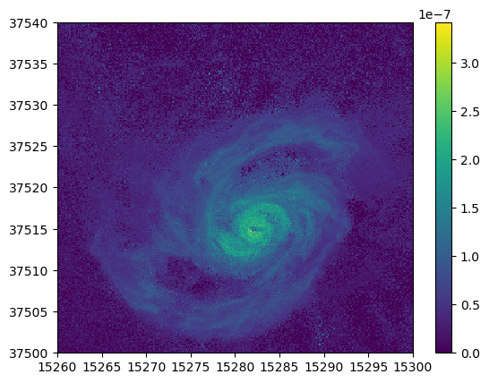
bins = 301
xbins = np.linspace(15260, 15300, bins)
ybins = np.linspace(37500, 37540, bins)
hist, xed, yed = np.histogram2d(x, y, bins=(xbins, ybins), weights=m*o)
# plt.pcolormesh(xed,yed, hist.T,norm=LogNorm(vmin=hist[hist>0].min(), vmax=hist.max()))
_hist, xed, yed = np.histogram2d(x, y, bins=(xbins, ybins))
a = hist/_hist
np.nan_to_num(a,0)
plt.pcolormesh(xed,yed,a.T,vmax=1e-6,vmin=0)
# plt.pcolormesh(xed,yed, hist.T)
plt.colorbar()
plt.show()
/tmp/ipykernel_396230/586434077.py:7: RuntimeWarning: invalid value encountered in divide
a = hist/_hist
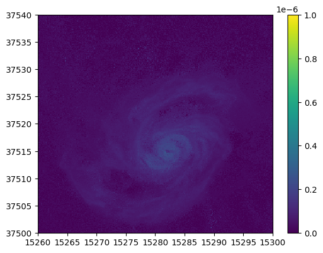
x, y, z, Ne= test.output("Ne")
bins = 301
xbins = np.linspace(15260, 15300, bins)
ybins = np.linspace(37500, 37540, bins)
hist, xed, yed = np.histogram2d(x, y, bins=(xbins, ybins), weights=Ne)
_hist, xed, yed = np.histogram2d(x, y, bins=(xbins, ybins))
# plt.pcolormesh(xed,yed, hist.T,norm=LogNorm(vmin=hist[hist>0].min(), vmax=hist.max()))
a = hist/_hist
np.nan_to_num(a,0)
plt.pcolormesh(xed,yed,a.T)
# plt.pcolormesh(xed,yed,hist.T)
plt.colorbar()
plt.show()
/tmp/ipykernel_396230/2122199638.py:8: RuntimeWarning: invalid value encountered in divide
a = hist/_hist
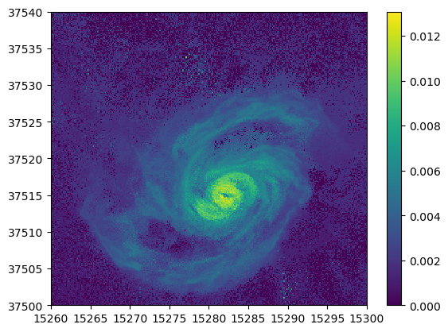
x, y, z, Ne= test.output("Ne")
bins = 301
xbins = np.linspace(15260, 15300, bins)
ybins = np.linspace(37500, 37540, bins)
hist, xed, yed = np.histogram2d(x, y, bins=(xbins, ybins), weights=Ne)
_hist, xed, yed = np.histogram2d(x, y, bins=(xbins, ybins))
# plt.pcolormesh(xed,yed, hist.T,norm=LogNorm(vmin=hist[hist>0].min(), vmax=hist.max()))
a = hist/_hist
np.nan_to_num(a,0)
plt.pcolormesh(xed,yed,a.T,vmax=1e-6,vmin=0)
# plt.pcolormesh(xed,yed,hist.T)
plt.colorbar()
plt.show()
/tmp/ipykernel_396230/3808236380.py:8: RuntimeWarning: invalid value encountered in divide
a = hist/_hist
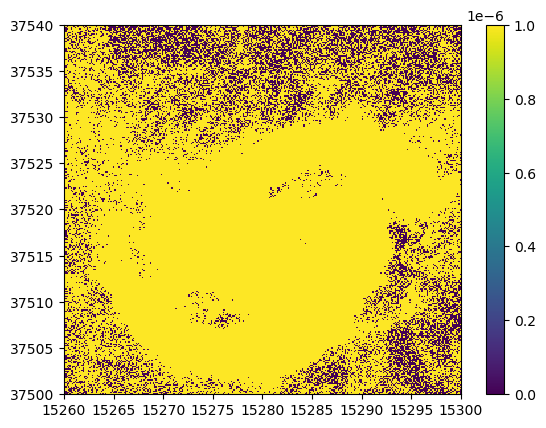
abundance
スターバースト銀河
| Z | El | atomicMass | angr | aspl | feld | aneb | grsa | wilm | lodd | lgpp | lgps | |
|---|---|---|---|---|---|---|---|---|---|---|---|---|
| 0 | 1 | H | 1.01 | 1.000000e+00 | 1.000000e+00 | 1.000000e+00 | 1.000000e+00 | 1.000000e+00 | 1.0000 | 1.000000e+00 | 1.000000e+00 | 1.000000e+00 |
| 1 | 2 | He | 4.00 | 9.770000e-02 | 8.510000e-02 | 9.770000e-02 | 8.010000e-02 | 8.510000e-02 | 0.0977 | 7.920000e-02 | 8.410000e-02 | 9.690000e-02 |
| 2 | 3 | Li | 6.94 | 1.450000e-11 | 1.120000e-11 | 1.260000e-11 | 2.190000e-09 | 1.260000e-11 | 0.0000 | 1.900000e-09 | 1.260000e-11 | 2.150000e-09 |
| 3 | 4 | Be | 9.01 | 1.410000e-11 | 2.400000e-11 | 2.510000e-11 | 2.870000e-11 | 2.510000e-11 | 0.0000 | 2.570000e-11 | 2.400000e-11 | 2.360000e-11 |
| 4 | 5 | B | 10.80 | 3.980000e-10 | 5.010000e-10 | 3.550000e-10 | 8.820000e-10 | 3.550000e-10 | 0.0000 | 6.030000e-10 | 5.010000e-10 | 7.260000e-10 |
plt.figure(figsize =(18, 5))
plt.plot(df['Z'], df["angr"]*df['atomicMass'],".-", lw=0.2)
plt.xticks(df['Z'], df['El']+df['Z'].astype(str))
plt.grid(alpha=0.2, ls="dotted")
plt.yscale("log")
plt.ylabel("Mass Weighted \n Solar Abundance (ratio to H)")
plt.xlabel("Atomic Number")
plt.show()
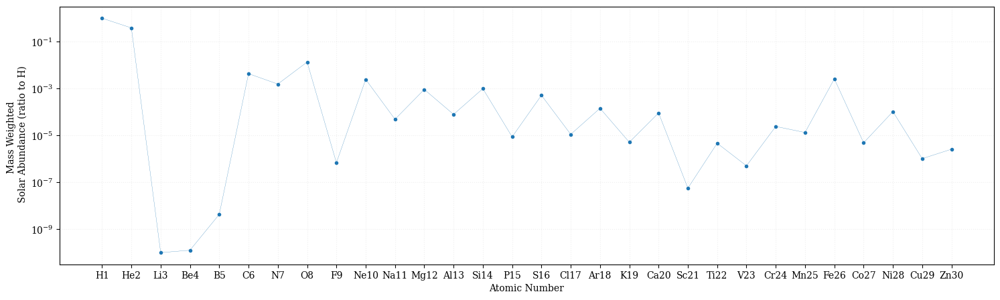
array([1.01000e+00, 3.90800e-01, 1.00630e-10, 1.27041e-10, 4.29840e-09,
4.35600e-03, 1.56800e-03, 1.36160e-02, 6.89700e-07, 2.48460e-03,
4.92200e-05, 9.23400e-04, 7.96500e-05, 9.97550e-04, 8.74200e-06,
5.20020e-04, 1.12180e-05, 1.44837e-04, 5.16120e-06, 9.18290e-05,
5.67000e-08, 4.67983e-06, 5.09000e-07, 2.43360e-05, 1.34505e-05,
2.61612e-03, 4.90048e-06, 1.04486e-04, 1.02870e-06, 2.60292e-06])
array([1.00e+00, 9.77e-02, 1.45e-11, 1.41e-11, 3.98e-10, 3.63e-04,
1.12e-04, 8.51e-04, 3.63e-08, 1.23e-04, 2.14e-06, 3.80e-05,
2.95e-06, 3.55e-05, 2.82e-07, 1.62e-05, 3.16e-07, 3.63e-06,
1.32e-07, 2.29e-06, 1.26e-09, 9.77e-08, 1.00e-08, 4.68e-07,
2.45e-07, 4.68e-05, 8.32e-08, 1.78e-06, 1.62e-08, 3.98e-08])
bins = 501
xbins = np.linspace(15260, 15300, bins)
ybins = np.linspace(37500, 37540, bins)
hist_o, xed, yed = np.histogram2d(x, y, bins=(xbins, ybins), weights=o)
hist_fe, xed, yed = np.histogram2d(x, y, bins=(xbins, ybins),weights=fe)
hist_h, xed, yed = np.histogram2d(x, y, bins=(xbins, ybins),weights=h)
a = np.log(hist_fe/hist_h)
plt.pcolormesh(xed,yed,a.T,vmin=-10,vmax=-1)
# # plt.pcolormesh(xed,yed,hist.T)
plt.colorbar()
plt.show()
/tmp/ipykernel_396230/3446975327.py:7: RuntimeWarning: invalid value encountered in divide
a = np.log(hist_fe/hist_h)
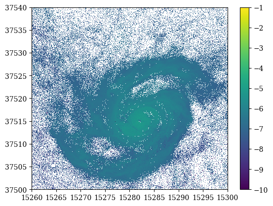
array([15281.68184811, 15281.69500092, 15281.7586662 , ...,
15299.68543225, 15298.4698359 , 15305.74966219])
array([37515.10719133, 37515.23975941, 37515.25137483, ...,
37451.56245699, 37473.95703724, 37563.955561 ])
bins = 501
xbins = np.linspace(15260, 15300, bins)
ybins = np.linspace(37500, 37540, bins)
hist_o, xed, yed = np.histogram2d(x, y, bins=(xbins, ybins), weights=o)
hist_fe, xed, yed = np.histogram2d(x, y, bins=(xbins, ybins),weights=fe)
hist_ = np.log(hist_fe/hist_o) - np.log(abd[25]/abd[7])
plt.pcolormesh(xed,yed,hist_.T)
plt.colorbar().set_label("[Fe/O]")
plt.ylabel("ckpc/h")
plt.xlabel("ckpc/h")
plt.show()
/tmp/ipykernel_396230/2830208354.py:8: RuntimeWarning: invalid value encountered in divide
hist_ = np.log(hist_fe/hist_o) - np.log(abd[25]/abd[7])
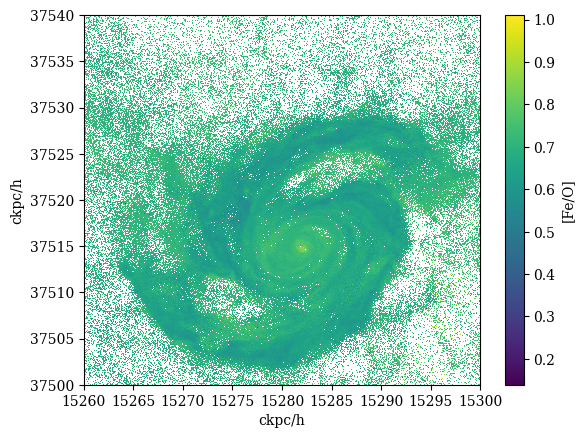
array([[ nan, 0.65468693, nan, ..., 0.71050592, nan,
nan],
[ nan, nan, nan, ..., nan, nan,
nan],
[ nan, nan, nan, ..., 0.74242014, nan,
nan],
...,
[0.72167015, nan, nan, ..., 0.72036116, nan,
nan],
[0.78364783, nan, nan, ..., 0.66969415, nan,
nan],
[ nan, nan, nan, ..., nan, nan,
nan]])
bins = 301
xbins = np.linspace(15260, 15300, bins)
ybins = np.linspace(37500, 37540, bins)
hist_h, xed, yed = np.histogram2d(x, y, bins=(xbins, ybins), weights=h)
hist_fe, xed, yed = np.histogram2d(x, y, bins=(xbins, ybins),weights=fe)
hist_ = np.log(hist_fe/hist_h) - np.log(abd[25]/abd[0])
plt.pcolormesh(xed,yed,hist_.T)
plt.colorbar().set_label("[Fe/H]")
plt.ylabel("ckpc/h")
plt.xlabel("ckpc/h")
plt.show()
/tmp/ipykernel_396230/3118658102.py:7: RuntimeWarning: invalid value encountered in divide
hist_ = np.log(hist_fe/hist_h) - np.log(abd[25]/abd[0])
3.0711571590682256
from TNG_catcher import *
files = glob.glob("./AllCutData/*.npz")
masslist = []
feperhlist = []
for i in files:
test = plot_tools(np.load(i))
test.set_faceon()
x, y, z, m, o, fe, h = test.output("Masses","O","Fe","H")
bins = 301
xbins = np.linspace(x.min(), x.max(), bins)
ybins = np.linspace(y.min(), y.max(), bins)
hist_h, xed, yed = np.histogram2d(x, y, bins=(xbins, ybins), weights=h)
hist_fe, xed, yed = np.histogram2d(x, y, bins=(xbins, ybins),weights=fe)
hist_ = np.log(hist_fe/hist_h) - np.log(abd[25]/abd[0])
hh = np.nanmean(hist_)
masslist.append(m.sum())
feperhlist.append(hh)
plt.scatter(masslist,feperhlist)
plt.xlabel(r"$10^{10}$ $M_\odot/h$")
plt.ylabel("[Fe/H]")
plt.savefig("FeH-Mass.png",dpi=300)
/tmp/ipykernel_396230/2261767497.py:18: RuntimeWarning: invalid value encountered in divide
hist_ = np.log(hist_fe/hist_h) - np.log(abd[25]/abd[0])
---------------------------------------------------------------------------
KeyboardInterrupt Traceback (most recent call last)
/home/nishihama/test_halo/plot_test4.ipynb セル 50 line 9
<a href='vscode-notebook-cell://ssh-remote%2Banna/home/nishihama/test_halo/plot_test4.ipynb#Y104sdnNjb2RlLXJlbW90ZQ%3D%3D?line=5'>6</a> feperhlist = []
<a href='vscode-notebook-cell://ssh-remote%2Banna/home/nishihama/test_halo/plot_test4.ipynb#Y104sdnNjb2RlLXJlbW90ZQ%3D%3D?line=7'>8</a> for i in files:
----> <a href='vscode-notebook-cell://ssh-remote%2Banna/home/nishihama/test_halo/plot_test4.ipynb#Y104sdnNjb2RlLXJlbW90ZQ%3D%3D?line=8'>9</a> test = plot_tools(np.load(i))
<a href='vscode-notebook-cell://ssh-remote%2Banna/home/nishihama/test_halo/plot_test4.ipynb#Y104sdnNjb2RlLXJlbW90ZQ%3D%3D?line=9'>10</a> test.set_faceon()
<a href='vscode-notebook-cell://ssh-remote%2Banna/home/nishihama/test_halo/plot_test4.ipynb#Y104sdnNjb2RlLXJlbW90ZQ%3D%3D?line=10'>11</a> x, y, z, m, o, fe, h = test.output("Masses","O","Fe","H")
File ~/test_halo/TNG_catcher/TNG_catcher.py:261, in plot_tools.__init__(self, data)
260 def __init__(self, data):
--> 261 self.data = dict(data)
263 self.__files_list = data.files
264 self.__rotation_ok = False
File ~/anaconda3/lib/python3.10/site-packages/numpy/lib/npyio.py:253, in NpzFile.__getitem__(self, key)
251 if magic == format.MAGIC_PREFIX:
252 bytes = self.zip.open(key)
--> 253 return format.read_array(bytes,
254 allow_pickle=self.allow_pickle,
255 pickle_kwargs=self.pickle_kwargs,
256 max_header_size=self.max_header_size)
257 else:
258 return self.zip.read(key)
File ~/anaconda3/lib/python3.10/site-packages/numpy/lib/format.py:812, in read_array(fp, allow_pickle, pickle_kwargs, max_header_size)
810 read_count = min(max_read_count, count - i)
811 read_size = int(read_count * dtype.itemsize)
--> 812 data = _read_bytes(fp, read_size, "array data")
813 array[i:i+read_count] = numpy.frombuffer(data, dtype=dtype,
814 count=read_count)
816 if fortran_order:
File ~/anaconda3/lib/python3.10/site-packages/numpy/lib/format.py:947, in _read_bytes(fp, size, error_template)
942 while True:
943 # io files (default in python3) return None or raise on
944 # would-block, python2 file will truncate, probably nothing can be
945 # done about that. note that regular files can't be non-blocking
946 try:
--> 947 r = fp.read(size - len(data))
948 data += r
949 if len(r) == 0 or len(data) == size:
File ~/anaconda3/lib/python3.10/zipfile.py:925, in ZipExtFile.read(self, n)
923 self._offset = 0
924 while n > 0 and not self._eof:
--> 925 data = self._read1(n)
926 if n < len(data):
927 self._readbuffer = data
File ~/anaconda3/lib/python3.10/zipfile.py:1015, in ZipExtFile._read1(self, n)
1013 if self._left <= 0:
1014 self._eof = True
-> 1015 self._update_crc(data)
1016 return data
File ~/anaconda3/lib/python3.10/zipfile.py:940, in ZipExtFile._update_crc(self, newdata)
937 if self._expected_crc is None:
938 # No need to compute the CRC if we don't have a reference value
939 return
--> 940 self._running_crc = crc32(newdata, self._running_crc)
941 # Check the CRC if we're at the end of the file
942 if self._eof and self._running_crc != self._expected_crc:
KeyboardInterrupt:
plt.scatter(masslist,feperhlist)
plt.xlabel(r"$10^{10}$ $M_\odot/h$")
plt.ylabel("[Fe/H]")
plt.savefig("FeH-Mass.png",dpi=300)
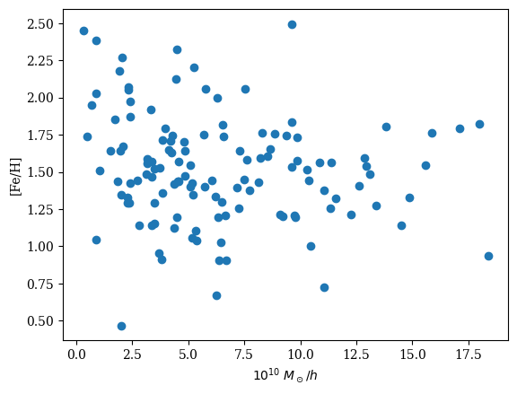
(127, 0)
bins = 301
xbins = np.linspace(x.min(), x.max(), bins)
ybins = np.linspace(y.min(), y.max(), bins)
hist_h, xed, yed = np.histogram2d(x, y, bins=(xbins, ybins), weights=h)
hist_fe, xed, yed = np.histogram2d(x, y, bins=(xbins, ybins),weights=fe)
hist_ = np.log(hist_fe/hist_h) - np.log(abd[25]/abd[0])
plt.pcolormesh(xed,yed,hist_.T)
plt.colorbar().set_label("[Fe/H]")
plt.ylabel("ckpc/h")
plt.xlabel("ckpc/h")
plt.show()
/tmp/ipykernel_396230/18573981.py:7: RuntimeWarning: invalid value encountered in divide
hist_ = np.log(hist_fe/hist_h) - np.log(abd[25]/abd[0])
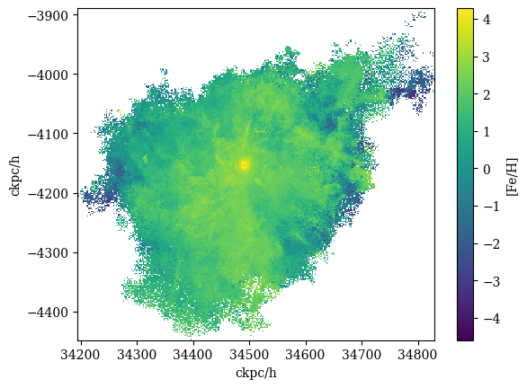
edge-on disk speed
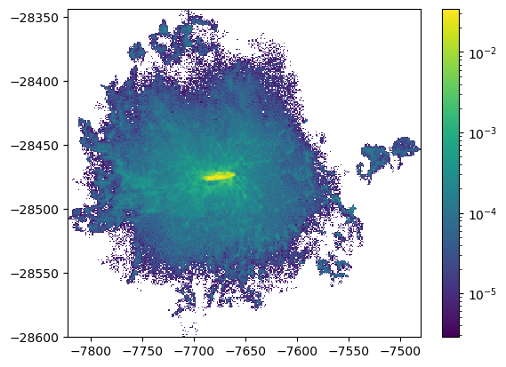
bins = 21
plt.title(f"bins = {bins}")
xmin = -7725
ymin = -28520
xbins = np.linspace(xmin, xmin+100, bins)
ybins = np.linspace(ymin, ymin+100, bins)
hist_vy, xed, yed = np.histogram2d(x, y, bins=(xbins, ybins), weights=vy)
hist_, xed, yed = np.histogram2d(x, y, bins=(xbins, ybins))
hist_vx, xed, yed = np.histogram2d(x, y, bins=(xbins, ybins), weights=vx)
xed, yed = np.meshgrid(xbins[1:],ybins[1:])
bins = 301
xbins = np.linspace(xmin, xmin+100, bins)
ybins = np.linspace(ymin, ymin+100, bins)
hist_m, xed_m, yed_m = np.histogram2d(x, y, bins=(xbins, ybins), weights=m)
hist_m = np.log(hist_m)
hist_vy = hist_vy/hist_
hist_vx = hist_vx/hist_
plt.pcolormesh(xed_m,yed_m,hist_m.T)
# plt.colorbar().set_label(r"velocity $y$ (km/s)")
plt.quiver(xed,yed,hist_vx.T,hist_vy.T)
plt.ylabel("ckpc/h")
plt.xlabel("ckpc/h")
plt.show()
/tmp/ipykernel_652741/3065944089.py:19: RuntimeWarning: divide by zero encountered in log
hist_m = np.log(hist_m)
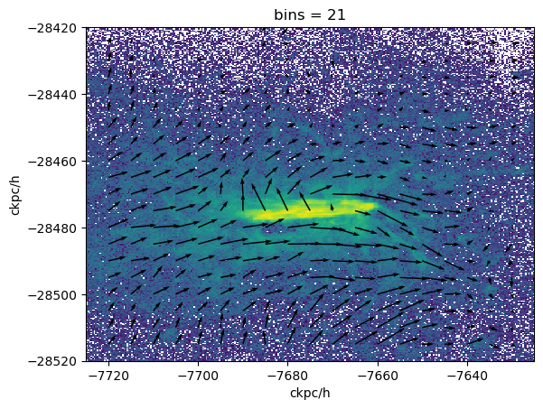
金属量
| Z | El | atomicMass | angr | aspl | feld | aneb | grsa | wilm | lodd | lgpp | lgps | |
|---|---|---|---|---|---|---|---|---|---|---|---|---|
| 0 | 1 | H | 1.01 | 1.000000e+00 | 1.000000e+00 | 1.000000e+00 | 1.000000e+00 | 1.000000e+00 | 1.0000 | 1.000000e+00 | 1.000000e+00 | 1.000000e+00 |
| 1 | 2 | He | 4.00 | 9.770000e-02 | 8.510000e-02 | 9.770000e-02 | 8.010000e-02 | 8.510000e-02 | 0.0977 | 7.920000e-02 | 8.410000e-02 | 9.690000e-02 |
| 2 | 3 | Li | 6.94 | 1.450000e-11 | 1.120000e-11 | 1.260000e-11 | 2.190000e-09 | 1.260000e-11 | 0.0000 | 1.900000e-09 | 1.260000e-11 | 2.150000e-09 |
| 3 | 4 | Be | 9.01 | 1.410000e-11 | 2.400000e-11 | 2.510000e-11 | 2.870000e-11 | 2.510000e-11 | 0.0000 | 2.570000e-11 | 2.400000e-11 | 2.360000e-11 |
| 4 | 5 | B | 10.80 | 3.980000e-10 | 5.010000e-10 | 3.550000e-10 | 8.820000e-10 | 3.550000e-10 | 0.0000 | 6.030000e-10 | 5.010000e-10 | 7.260000e-10 |
plt.figure(figsize =(18, 5))
plt.plot(df['Z'], df["angr"]*df['atomicMass'],".-", lw=0.2)
plt.xticks(df['Z'], df['El']+df['Z'].astype(str))
plt.grid(alpha=0.2, ls="dotted")
plt.yscale("log")
plt.ylabel("Mass Weighted \n Solar Abundance (ratio to H)")
plt.xlabel("Atomic Number")
plt.show()
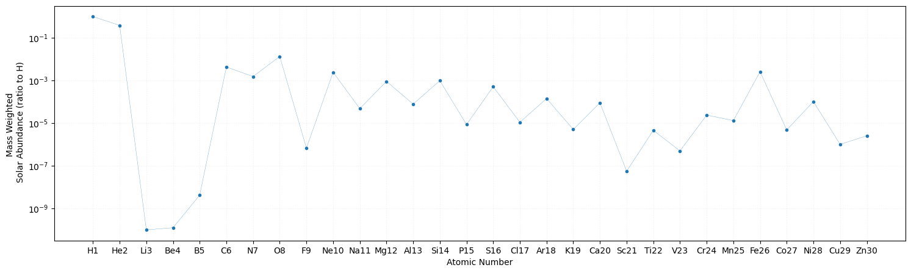
bins = 301
xbins = np.linspace(15260, 15300, bins)
ybins = np.linspace(37500, 37540, bins)
hist_h, xed, yed = np.histogram2d(x, y, bins=(xbins, ybins), weights=h/df['atomicMass'][0])
hist_fe, xed, yed = np.histogram2d(x, y, bins=(xbins, ybins),weights=fe/df['atomicMass'][25])
hist_ = np.log(hist_fe/hist_h) - np.log(df["angr"][25]/df["angr"][0])
plt.pcolormesh(xed,yed,hist_.T)
plt.colorbar().set_label("[Fe/H]")
plt.ylabel("ckpc/h")
plt.xlabel("ckpc/h")
plt.show()
/tmp/ipykernel_652741/2211947797.py:7: RuntimeWarning: invalid value encountered in divide
hist_ = np.log(hist_fe/hist_h) - np.log(df["angr"][25]/df["angr"][0])
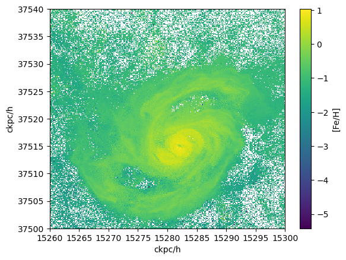